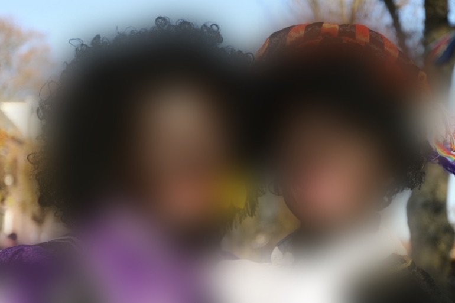

New White Nr. 59
White innocence
“Bright and modern. A fresh creamy white. New White is one of the “Yellow-Based Neutrals” series. It feels a lot fresher than traditional whites. An ideal “white” for interplay with a stronger colour. New White always brings warmth to the room.”
Adler Wohndesign GmbH 34
The naturalised, invisible whiteness that has put together a system in place to keep its power, has turned the white cube into a place of comfort for itself. The body-at-home has forgotten or refused to remember how it got put in place. It resides in the comfort of the system it dominates, feeling entitled and deserving of its privilege and advantages. This internalised sense of superiority can turn into fragility when confronted. The mere suggestion that white yields meaning can trigger a range of defensive responses to return to the white comfort.35 This is what DiAngelo describes as “White Fragility” in her book of the same name. This fragility is a powerful means of racial control.36
The white progressive living in the white bubble is unable to see or refuses to see that their actions perpetuate the system in which they live in, rendering black bodies invisible and discussions around race more difficult or superfluous by obscuring the system put in place while simultaneously perpetuating it when refusing to be confronted by it. This is what Gloria Wekker calls “white innocence”: Innocence as: not knowing, forgetting, not wanting to know or even rejecting the possibility of knowing –a process where innocence can turn into ignorance–.39 And a process in which denial also results in never engaging in acknowledging a factual setting. These defence mechanisms are put in place to maintain the status quo. They comfort because to acknowledge the terrorising reality of white is to disrupt the fantasy of whiteness as representing goodness.40 This in return makes it difficult to speak out against the system, as those who speak are silenced or accused of demanding special treatment.41
In her book, Gloria Wekker chooses the example of Zwarte Piet (the figure of the Black Piet) as a reflection of this white innocence when dealing with the Netherlands, a country that for many of its inhabitants is viewed as an example of progressiveness for countries across the globe.42 In her deconstruction of Zwarte Piet, Gloria Wekker enables us to see all aspect of this white innocence in action. Zwarte Piet is a beloved folkloric figure in the Netherlands. It's the figure of a blackened man played by a white man or woman. The costume is composed of black face, thick red lips, folded earrings, an afro wig and a colourful Moor’s costume. Zwarte Piets (plural) are the silly black servants accompanying by foot the huge wise old white bishop Sinterklaas (singular) riding on a horse bringing presents to children.43 Over time the figure of the Black Piet came to be seen by many as a racist caricature but discussion about Black Piet in the Netherlands often brings out aggressive reactions in white people defending it.

The three main reasons Gloria Wekker names for the refusal to end this tradition is the fear of losing one's culture, the supposed innocence of the celebration and a reversal of the narrative. The fear of losing one's culture is the sense that the Dutch culture should be defended against exterior forces. White –the body-at-home– is feeling a sense of loss and is being triggered by the idea that their culture is being taken away from them by what they perceive as the guests. The supposed innocence stems from the notion that Black Piet is a children figure. Taking away the figure of Black Piet would be to deny children of sweet childhood memories and in return spoiling adults' existing memories. This reflects a white self-image that insists on seeing itself as inherently good. The reversal of the narrative is the statement that Black Piet isn’t a racist caricature and that those who see a problem with him are those who have a problem themselves. This technique of silencing and victim-blaming enables the maintaining of the status quo by leaving white unchecked and reversing the narrative onto the others. These techniques render discussion about the figure of Black Piet more difficult or superfluous.


The white of the here and now is invested in the myth of sameness while perpetuating the same system that has always favoured it, because to acknowledge the system requires an openness for change and loss, the disruption of the fantasy of white as innocent and acountability. Instead, white finds comfort in the house it shaped, the walls it painted in its own colours and the stories it tells itself because it doesn't hurt.
34 - All White Nr. 2005 Farrow and Ball: ADLER Wohndesign. (2018, March 16). Retrieved October 13, 2020, from https://www.adler-wohndesign.de/farrowandball/farrow-and-ball-farben/all-white/